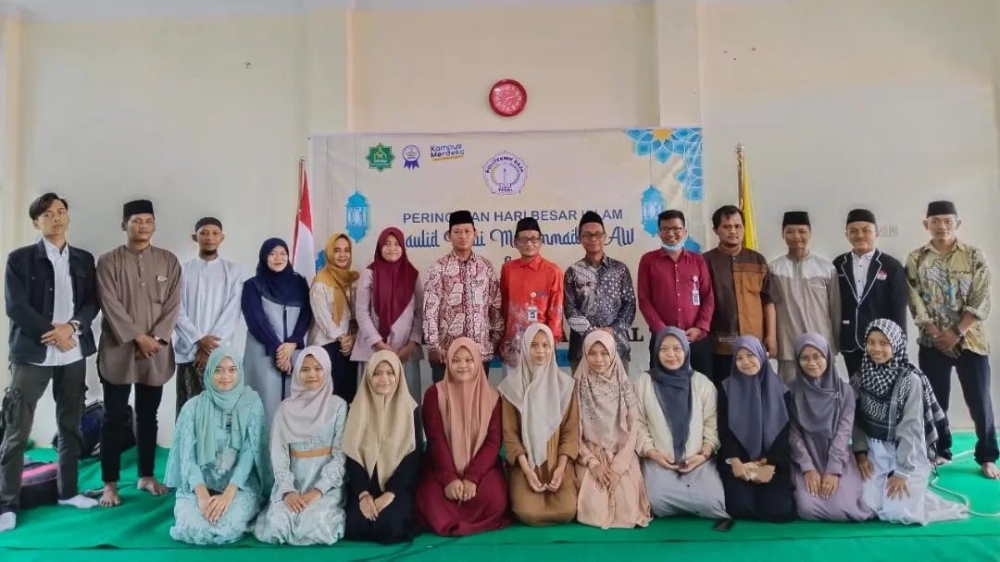

Rohis
Rohis adalah salah satu UKM yang ada di Politeknik Baja Tegal yang didirikan pada tanggal 13 Agustus 2020. Rohis dijalankan untuk mengembangkan aspek spiritual yang berlandaskan ajaran islam yang dilakukan di lingkungan kampus. Mencakup berbagai aktivitas seperti pengajian yang bertujuan untuk memperdalam pemahaman agama dan meningkatkan kualitas iman.
Visi
mewujudkan generasi muda yang kreatif, beriman dan berilmu